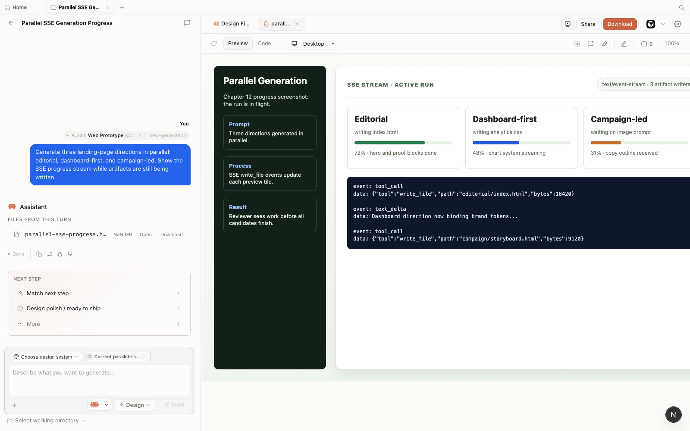

Chapter
12
Multi-Agent Design Teams
Orchestrating parallel agents for a single design goal
Splitting a design goal across role-specialized agents produces more variations faster, but only pays off when the coordination cost is lower than the parallelism gain. This chapter shows you how to think about agents as a team: an orchestrator assigns roles, each agent works in parallel inside the same Open Design project, and you merge the outputs at review. It also tells you when to ignore all of that and go back to one agent.
12.1 Why Run Agents in Parallel
A single agent iterates one artifact at a time. It generates, you review, it revises. That loop works perfectly for a single polished output. But there are tasks where you don't want one good answer---you want ten options fast: hero treatments, copy variants, motion pacing alternatives, color-scheme explorations. That's the moment agents as a team become worth the overhead.
Open Design's daemon is a Node 24 Express server with SSE streaming (covered in Chapter 02). It accepts concurrent requests over separate SSE channels and stores each artifact independently in the .od/projects/<id>/ layout. As of June 2026, the daemon does not enforce a concurrency ceiling at the application layer---it relies on the underlying Node event loop and your provider's rate limits. That means you can connect multiple agent CLIs to the same project simultaneously.
The practical benefit: layout exploration that would take three sequential loops in a solo session---generate, review, repeat---can run in one round when three agents fan out in parallel. The coordination cost is real: you write a clear brief for each role, wait for the slower agent to finish, and then do a merge pass. That cost is low when you have seven variations to produce. It's high when you have one.
There's also a quality argument for the variation case specifically. When you run one agent through three hero options sequentially, each option is influenced by the previous one---the agent anchors on what it just made. When three agents each produce one option independently, you get genuine divergence. That divergence is the product; it's why you parallelized in the first place.
Use the parallel pattern when the task is inherently parallel---variation sets, A/B treatments, multi-section drafts---and use a single agent for single outputs. The decision point is roughly: if you'd review all outputs at once anyway, fan out.
|
Orchestrator
Assigns goal + role brief to each agent
|
||||
| ↙ | ↓ | ↘ | ||
|
Layout
HTML prototype
|
Variations
HTML fragments ×3
|
Copy
Markdown doc
|
||
| ↘ | ↓ | ↙ | ||
|
Review + Merge
Compare artifacts, pick or combine outputs
|
||||
Assigns goal + role brief to each agent
Layout, Variations, Copy — run in parallel
Compare artifacts, pick or combine outputs
12.2 Assigning Roles
Before you open a terminal, define the roles. A role has three parts: a name, a responsibility boundary, and an artifact target. The boundaries matter because agents don't coordinate with each other---they only read the brief you gave them. If two roles overlap, you'll get two artifacts solving the same problem and a harder merge.
Here's the role framework I use for visual design goals. It maps to the artifact types Open Design generates natively (web prototypes, motion graphics, copy layers), so each role produces something the preview can render independently.
| Role | Responsibility | Artifact target | Suggested agent |
|---|---|---|---|
| Orchestrator | Writes the goal brief, assigns roles, reviews and merges outputs | None (human or lead agent) | Claude Code or human |
| Layout | Page structure, component hierarchy, grid, spacing | Single-page HTML prototype | Claude Code (capable proprietary) |
| Variations | Three to five alternative hero or section treatments | Multiple single-component HTML fragments | OpenCode (MIT, cost-effective) |
| Copy | Headline, subheading, CTA, and microcopy options | Markdown copy document or HTML text overlay | Cursor (fast setup, strong language model) |
| Motion | HyperFrames animation of key transitions or a hero sequence | HyperFrames HTML artifact (renders to MP4) | Claude Code (HyperFrames prompt complexity) |
The Orchestrator role doesn't have to be an agent. In most runs I play orchestrator myself: I write the goal brief, paste role-specific sub-briefs into each agent CLI, and do the review pass manually. Automating the orchestrator step is possible---you could use Claude Code as an agent-of-agents, delegating sub-briefs programmatically via MCP---but it adds a layer of indirection that usually slows down small teams more than it helps. The value of a human orchestrator is judgment at merge time: knowing that Variation-B fits better than Variation-A for reasons no brief could specify.
12.3 Routing Roles to Agents
Chapter 11 covers the full agent comparison. The routing logic for multi-agent design work follows one principle: use capable proprietary agents for work that requires the most context-holding and the highest quality ceiling; use cheap or open agents for work that needs volume. This isn't a permanent hierarchy---agent capabilities and pricing churn monthly, and the table below will age. It reflects the best routing I've found as of June 2026.
| Role | Recommended agent | Rationale | Cost tier |
|---|---|---|---|
| Layout (hero work) | Claude Code (Anthropic Pro/Max) | Complex layout requires deep context and multi-step reasoning about design hierarchy | $20–$200/month |
| Variations (exploration) | OpenCode v1.17.3 (MIT) | Volume-first; acceptable if individual variation quality is lower; self-hosted models keep cost near zero | Free (self-hosted) |
| Copy | Cursor Pro | Low setup overhead; strong language model access via Anthropic; copy work rarely needs multi-file context | $20/month |
| Motion (HyperFrames) | Claude Code | HyperFrames HTML animation prompts are complex; use the same capable agent as Layout unless budget is tight | $20–$200/month |
Multi-agent design teams are oversold for single artifacts and undersold for variation-heavy work. They shine when you need ten hero options, not one perfect page. Coordination overhead dominates for a single output but disappears when the task is inherently parallel. If you're treating agents as a team, the "team" only earns its coordination cost when you'd genuinely review all outputs side by side anyway. If you find yourself manually stitching outputs together, the goal was probably not parallel to begin with---go back to one agent.
12.4 Running the Team
The walkthrough below runs the Layout, Variations, and Copy roles in parallel against one design goal: a landing page for a local-first design tool. All three agents connect to the same Open Design project via MCP (Model Context Protocol), which was covered in Chapter 10. Each agent generates into a separate artifact within the project.
Create the project. Open a new Open Design project from the UI or CLI. Note the project ID from the URL or the .od/projects/ directory. All three agents will target this project ID.
$ od project new "Landing Page - Local-First Tool"
# Output: project created at .od/projects/lp-local-first-001/Write the orchestrator brief. Before opening any agent CLI, write a shared goal brief that all role agents will receive, plus individual role briefs that constrain each agent to their boundary. Paste-ready prompts below.
# Shared goal brief (paste into every role agent first)
Goal: a landing page for a local-first design tool.
Brand: use Open Design's own DESIGN.md (load from project).
Constraints: single-page HTML, no external dependencies,
self-contained artifact, dark theme.
# Layout agent brief
Role: Layout.
Your job: page structure and hero section only.
Deliver: one single-page HTML prototype with
structural sections (hero, features, CTA, footer)
and placeholder content. No copy, no motion.
# Variations agent brief
Role: Variations.
Your job: three alternative hero section treatments.
Deliver: three separate HTML fragments, each a
standalone hero section. Label them Variation-A,
Variation-B, Variation-C.
# Copy agent brief
Role: Copy.
Your job: headline, subheading, CTA, and feature
copy options.
Deliver: a Markdown document with three sets of
headline + subheading + CTA. Label them Copy-1,
Copy-2, Copy-3.Connect agents and stagger the starts. Open three separate terminal sessions, each with a different agent CLI connected to Open Design via od mcp install <agent>. Start the Layout agent first, wait five to ten seconds, then start Variations, then Copy. This stagger prevents all three from hitting the model provider simultaneously and saturating the shared rate limit.
# Terminal 1: Layout agent (Claude Code)
$ od mcp install claude-code
# Paste shared goal brief + layout brief, submit
# Terminal 2: Variations agent (OpenCode) — start 5-10s later
$ od mcp install opencode
# Paste shared goal brief + variations brief, submit
# Terminal 3: Copy agent (Cursor) — start 5-10s later
$ od mcp install cursor
# Paste shared goal brief + copy brief, submitMonitor the SSE streams. Each agent's generation streams into a separate artifact in the Open Design preview. Watch the project artifact list in the UI: you should see three artifacts populating in near-parallel. The Layout artifact will likely finish last because it's the most complex; the Copy artifact (Markdown) will finish first.

write_file events with per-direction progress while the run is still streaming. Mock-safe screenshot from Open Design v0.11.0, captured June 2026.Wait for all three agents to finish. Don't start the merge pass while any agent is still generating. A partial Layout artifact plus the final Copy document produces a confusing review. Give each agent a clear window to complete, then move to the merge step.
As of June 2026, multiple agents sharing the same Open Design daemon also share the same BYOK proxy and the same provider rate-limit quota. If all three agents send model-inference requests at the same moment, they compete for the same API quota. The result is cascading 429 errors and partial artifacts. Stagger starts by five to ten seconds per agent, and if you're using the same provider for all roles, consider spreading roles across different providers via the BYOK configuration in Chapter 10.
12.5 Merging and Reviewing
The merge step is not a technical operation---Open Design does not have a built-in artifact merge tool as of June 2026. It's a design review. You open each artifact in the sandboxed preview, decide which structural choices from Layout to keep, which hero treatment from Variations fits best, and which copy set from Copy to apply, then ask one agent (usually the Layout agent, since it owns the structural artifact) to apply the chosen copy and the chosen hero treatment. The merge is a prompt, not a file operation.
Effective merge flow:
# Round 2 prompt to Layout agent
Keep the current page structure.
Replace the hero section with Variation-B
(the split layout with the terminal screenshot).
Apply Copy-2 (headline: "Design on your machine").
Export the merged artifact as a self-contained HTML file.Ineffective merge flow:
# Asking a fresh agent to "merge" three artifacts
Here are three HTML files. Combine them into
one landing page.
[paste Variation-A, Variation-B, Variation-C, Layout, Copy-1...]
# Result: agent produces a fourth artifact that
# misses the point of all threeThe effective merge uses the Layout agent as the owner of the final artifact and treats the other outputs as references it incorporates via a clear revision prompt. The ineffective merge hands the merge problem to a new agent with too much context and no clear decision.
| Symptom | Cause | Fix |
|---|---|---|
| One or more agents return a 429 error mid-generation | Concurrent requests exceeded provider rate limit; all agents share the BYOK proxy quota | Stagger agent starts by 5–10 seconds; or route roles to different providers in BYOK config (see Chapter 10) |
| Artifact preview is blank after generation completes | SSE stream completed but the artifact parser hit a malformed output; or the sandboxed iframe failed to load the artifact | Reload the artifact in preview; if blank persists, ask the agent to regenerate with a simplified prompt; check browser console for sandbox errors |
| Two agents write to the same artifact, producing corrupted output | Role briefs overlapped; both agents targeted the same artifact name or slot | Ensure role briefs give each agent a distinct artifact name; re-run the affected agent with a corrected brief |
| SQLite lock error or daemon crash under concurrent load | Multiple agents writing to .od/app.sqlite simultaneously; better-sqlite3 uses synchronous writes that can conflict |
Reduce concurrency to two agents at a time; stagger starts; restart the daemon after a crash and re-run from the last stable artifact |
12.6 When Not to Use a Team
Multi-agent design isn't always the right call. The coordination cost is real: writing per-role briefs, managing multiple terminal sessions, staggering starts, and doing a deliberate merge pass. That overhead is worth it when you're exploring a wide design space. It isn't worth it in these cases:
- Single-artifact outputs. If the deliverable is one polished landing page, one reviewed deck, or one branded email, a single capable agent iterated through the four-beat loop will outperform a three-agent fan-out on quality and time.
- Tight feedback loops. If you're iterating every five minutes on a detail, switching between three CLI sessions kills the flow. Stay in one agent.
- Unclear role boundaries. If you can't write clean, non-overlapping role briefs in under ten minutes, the task isn't structured enough to parallelize. Clarify the goal first.
- Provider-limited environments. If your BYOK setup is rate-limited or you're on a single low-quota API key, the contention overhead makes multi-agent slower than sequential.
I treat agents as a team mainly for exploration phases---before I know which direction to commit to. Once I've picked a direction, I drop back to one agent and drive it to completion. The team metaphor only holds when everyone on the team is doing a different job at the same time. If you're assigning three agents to the same problem, you're not running a team---you're running a lottery.
The test is simple: could you review all the outputs side by side in one sitting and pick a winner in under thirty minutes? If yes, parallelism earns its overhead. If the outputs require reconciliation, context-sharing, or sequential refinement before any of them are reviewable, you've added coordination for negative gain. Go back to one agent, define the goal more tightly, and run the generate-preview-iterate-export loop from Chapter 03.
As of June 2026, multi-agent design orchestration in Open Design is a practice, not a product feature. Open Design does not provide an orchestration UI, an agent scheduler, a merge tool, or a diff view across artifacts. What it provides is a daemon that supports concurrent generation and a project model that lets multiple artifacts coexist inside a single .od/projects/<id>/ directory. The orchestration layer---how you brief agents, how you stagger them, how you decide on a winner---is entirely yours to design and run.
Next: Chapter 13 takes the patterns from this chapter---fan-out, role assignment, merge review---and shows them running inside four complete end-to-end workflows: a stakeholder review package, a legacy app brand refresh, a Figma-to-component-library migration, and a motion and image campaign. Each case names what went wrong and how it was fixed, so you can take the arc directly into your own work.